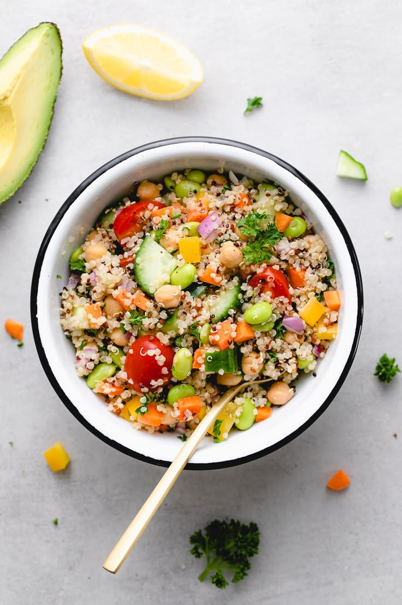

Bowl de quinoa y vegetales
🥣 INGREDIENTES
Quinoa, zanahoria, zucchini, morrón, cebolla morada, aceite de oliva, limón, sal, pimienta, semillas.
👨🍳 UTENSILIOS
Olla, bandeja de horno, bowl, cuchillo, tabla.
🥘 PREPARACIÓN
- Lavar la quinoa y hervirla 15 min.
- Cortar los vegetales en cubos.
- Condimentar con aceite, sal y pimienta.
- Hornear a 180°C por 20 min.
- Mezclar con quinoa y terminar con limón y semillas.
